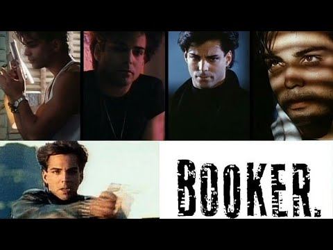
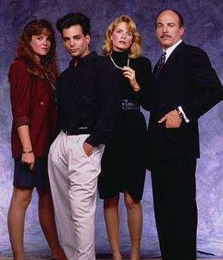

J'avais huit ans.
Booker, c'était Richard Grieco, quelques années avant qu'il ne débarque au cinéma. Un spin-off de 21 Jump Street, où il incarnait cette cool attitude qu'on ne savait pas encore nommer à cet âge — un privé qui luttait contre les injustices, toujours prêt à aider sans rien demander en retour.
Un peu comme MacGyver, à sa manière. Une figure qui faisait le bien parce que c'était juste, pas parce qu'on le lui demandait.
Sauf que Booker avait autre chose. Un style, une désinvolture, quelque chose de plus urbain, de plus tranchant.
C'est cette série qui a fait de Grieco mon modèle, bien avant que je ne le retrouve au cinéma dans If Looks Could Kill (Espion Junior).
Ce soir, on retourne à ses débuts.

Booker — générique, 1989
Booker.
1989. Créée par Stephen J. Cannell pour la Fox. Deux saisons, jusqu'en 1990.
Un spin-off de 21 Jump Street — la série qui avait révélé Richard Grieco dans le rôle secondaire de Dennis Booker, jeune flic infiltré au look reconnaissable entre mille. Le personnage plaît tellement au public que la Fox lui offre sa propre série.
Booker n'est plus flic. Reconverti enquêteur pour une compagnie d'assurances, il traque les fraudes, les escroqueries, les injustices qui se cachent derrière les dossiers que personne d'autre ne veut ouvrir.
Richard Grieco y impose ce qui deviendra sa signature — le blouson en cuir, la moto, cette désinvolture qui cache une vraie conviction morale.
Booker ne dure que deux saisons.
Mais il installe durablement l'image que Grieco portera ensuite au cinéma.
1989.
21 Jump Street cartonne sur la Fox depuis 1987. La série a lancé la carrière de Johnny Depp, mais c'est un second rôle qui capte une attention inattendue — Dennis Booker, flic infiltré interprété par Richard Grieco, dont le blouson en cuir et l'attitude frondeuse deviennent rapidement iconiques auprès du jeune public.
Stephen J. Cannell, producteur chevronné derrière L'Agence Tous Risques et Rick Hunter, flaire le potentiel. Il détache le personnage de 21 Jump Street et lui construit sa propre série.
Le pari est risqué. Faire porter un spin-off entier par un acteur jusque-là cantonné aux seconds rôles n'a rien d'une garantie de succès. Cannell mise tout sur le charisme brut de Grieco et sur un concept qui s'éloigne du commissariat pour explorer autre chose — l'enquête d'assurance, terrain moins exploité que le polar policier classique.
Le tournage capitalise sur l'image déjà installée du personnage — la moto, le cuir, cette allure de mauvais garçon au grand cœur qui avait fait le succès de son passage dans 21 Jump Street.
La série trouve son public chez les adolescents et jeunes adultes, mais peine à convaincre au-delà. Deux saisons plus tard, Fox met fin à l'expérience.
Grieco, lui, a déjà ce qu'il cherchait — une image, un capital de sympathie, un tremplin vers le cinéma qui s'ouvre dès 1990.
Richard Grieco — Booker, 1989
Dennis Booker a quitté la police.
Après ses années sous couverture dans les lycées pour 21 Jump Street, il se reconvertit comme enquêteur pour une compagnie d'assurances de Los Angeles. Un choix de carrière qui pourrait sembler terne — sauf que Booker en fait un terrain d'action à part entière.
Derrière chaque dossier de fraude qu'on lui confie se cache une histoire plus sombre. Des escroqueries qui dissimulent des trafics, des accidents suspects qui masquent des meurtres, des innocents pris au piège de systèmes qui les dépassent.
Booker ne se contente jamais du dossier administratif. Il enquête sur le terrain, avec cette même désinvolture frondeuse qui avait fait sa réputation — moto, blouson en cuir, répliques assassines, mais toujours cette conviction intacte de vouloir aider ceux que personne d'autre ne défend.
Chaque épisode le voit naviguer entre deux mondes — celui, feutré et procédurier, des compagnies d'assurances, et celui, bien plus dangereux, des criminels qui se cachent derrière les paperasses.
Un privé qui n'en a pas le titre, mais qui en a toute l'attitude.
Booker repose entièrement sur un pari — celui de faire porter une série complète par la seule alchimie d'un acteur avec son personnage.
Ce pari fonctionne, au moins en partie, parce que Richard Grieco comprend exactement ce qui avait fait le succès de Dennis Booker dans 21 Jump Street. Il ne cherche pas à approfondir le personnage ou à lui donner une complexité nouvelle. Il capitalise sur ce qui marchait déjà — le charisme brut, la nonchalance étudiée, cette capacité à sembler toujours légèrement au-dessus de la situation sans jamais paraître arrogant.
Le concept de l'enquêteur d'assurance est en réalité malin. Il permet à la série de varier ses intrigues sans les contraintes du polar policier classique — pas besoin de hiérarchie, de commissariat, de collègues récurrents. Booker navigue seul, libre, dans des environnements différents à chaque épisode.
Mais c'est aussi la limite de la série. Sans l'ancrage plus large de 21 Jump Street — son casting choral, ses thématiques sociales traitées de front — Booker repose sur un équilibre plus fragile. Le personnage doit porter seul ce que la série précédente répartissait sur plusieurs épaules.
Ce qui reste, malgré tout, c'est une proposition de héros cohérente avec ce que la génération qui l'a suivie retient de Grieco. Un privé sans le titre, un redresseur de torts sans institution derrière lui, une conviction que la justice mérite d'être rendue même quand personne ne le demande.
C'est ce même noyau qu'on retrouvera, à peine deux ans plus tard, dans ses rôles au cinéma.

Le casting de Booker, 1989
Booker n'a jamais eu la chance de sortir de l'ombre de 21 Jump Street.
Le spin-off souffre d'une comparaison permanente et écrasante avec la série mère. 21 Jump Street avait un ensemble, des thématiques sociales fortes, une ambition qui dépassait le simple divertissement. Booker, recentré sur un unique personnage et un concept plus léger, ne pouvait que sembler diminué en comparaison — même quand son exécution restait honnête.
Deux saisons, c'est court pour installer durablement une identité propre dans la mémoire collective. La série s'arrête avant d'avoir eu le temps de se détacher véritablement de son personnage d'origine.
Et la trajectoire cinéma de Richard Grieco a fini par recouvrir cette étape télévisuelle. If Looks Could Kill en 1991, puis les autres films qui suivent, deviennent les références qu'on retient de l'acteur — Booker glisse au second plan, réduit à une note de bas de page dans sa filmographie.
Le nom "Booker" survit surtout comme curiosité pour les connaisseurs de 21 Jump Street, ceux qui se souviennent que le personnage a eu droit à sa propre série avant de disparaître des radars.
Une série éclipsée par ce qui l'a fait naître, puis par ce qui a suivi.
Parce que c'est le premier rôle où Richard Grieco porte seul un projet entier — avant les films, avant la reconnaissance cinéma, la preuve que le charisme qui avait marqué 21 Jump Street pouvait tenir une série à lui seul.
Booker mérite d'être vu comme un document de transition — celui qui capture Grieco au moment précis où il passe du second rôle prometteur à la tête d'affiche, avec toute l'énergie et l'inexpérience que ça implique.
Et le concept d'enquêteur d'assurance, aussi modeste soit-il sur le papier, offre une variation qui change du polar policier habituel — une manière différente d'aborder l'enquête télévisée de la fin des années 80.
J'avais huit ans quand j'ai découvert ce personnage.
Il est resté mon modèle bien après que la série se soit arrêtée.
Il y a cette image qui reste, plus que n'importe quelle intrigue de la série — Booker sur sa moto, blouson en cuir, qui s'éloigne après avoir réglé une affaire dont personne ne lui avait rien demandé. Pas de récompense, pas de reconnaissance officielle. Juste ce sentiment tranquille d'avoir fait ce qu'il fallait faire.
Booker n'a duré que deux saisons. Une parenthèse, née d'un second rôle qui avait pris trop de place pour rester à sa place. Et pourtant, c'est dans cette parenthèse que tout s'est joué — la première fois que Richard Grieco a dû porter un projet entier sur ses seules épaules, sans l'ensemble de 21 Jump Street pour le soutenir.
Ce que la série a construit là, maladroitement peut-être, mais sincèrement, c'est une figure qui allait traverser toute une décennie de la carrière de Grieco — celle de l'homme qui aide sans qu'on le lui demande, qui reste cool sous la pression, qui préfère l'action juste à la reconnaissance publique.
À huit ans, je ne savais rien de tout ça. Je ne savais pas que je regardais les débuts d'un acteur, la genèse d'une image qui allait ensuite se prolonger au cinéma. Je savais juste que je voulais lui ressembler.
Avec le recul, Booker n'est pas la meilleure série de son époque. Mais c'est celle qui m'a appris à quoi ressemblait un héros qui n'en cherchait pas le titre.
La cassette est dans le lecteur. On rembobine.
Titre original
Booker
Pays
États-Unis
Genre
Policier / Aventure
Diffusion
Fox, 1989–1990 (2 saisons)
Créateur
Stephen J. Cannell
Spin-off de
21 Jump Street
Écho
If Looks Could Kill / Espion Junior (S1)
Fil conducteur
Séries TV cultes — EP. 03
SOMEDAY — SÉRIES EP. 03